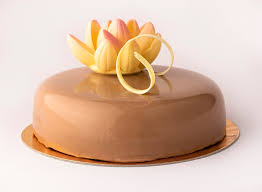

Torturi cu ciocolata:
Aceste torturi dulci sunt consumate cel mai des de catre clienti deoarece contin ciocolata fina si delicioasa

Logoul cofetariei noastre
Siteul contine informatii despre torturi :retete de fabricatie cu ingrediente folosite,cantitati,mod de preparare,timp de preparare,categorii de torturi,recomandari,sfaturi utile pentru consumatorii de torturi.
Categorii de torturi:
Aceste torturi dulci sunt consumate cel mai des de catre clienti deoarece contin ciocolata fina si delicioasa
Torturile cu fructe sunt recomandate pe timpul verii deoarece sunt racoritoare si reconfortante.
Torturile cu frisca sunt recomandate mai mult in sezonul rece si sunt apreciate de consumatorii nostri.
